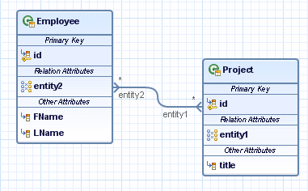

The Eclipse IDE provides a JPA diagram editor that allows you to create, edit, and display the application data model (persistent types and their relationships) in a graphical environment.
You can only use one JPA diagram per project, and you cannot visualize entities from different projects in one and the same JPA diagram.
Example:
The following JPA diagram represents the data model of employees participating in various projects, that is, two entities with a bidirectional many-to-many relationship:

The JPA diagram editor comprises the following general features:
Ability to create persistent types and define relationships between them.
Ability to import existing persistent types together with their relationships.
Full synchronization with the underlying application code. That means, whenever you apply a change to any of the objects on the diagram, the corresponding application code updates automatically, and the opposite.
Error and warning markers with informative quick info text. You can view details on the marked errors and warnings in the Problems view.
Integration with the JPA Details view and the Miniature View.